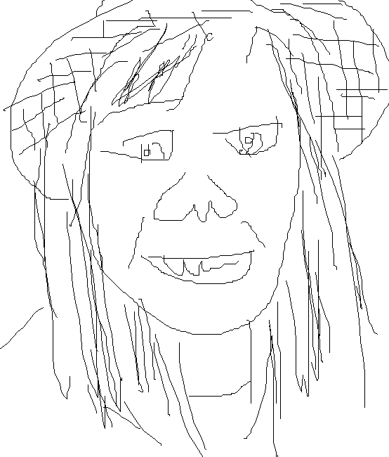

關於彰友會與會長的話
施媽媽的語重心長

嗨大家～～～首先恭喜你們終於要出發上大學嘍！歡迎大家來成大和我們一起play，09的學長姐們真的都滿心期待要和你們見面><
大家應該很好奇到底什麼是彰友會呢！彰友會不單純只是一個社團組織或是一個提供和高中同學見面機會的平台。對於離開彰化獨自到台南奮鬥的你們來說，這裡像是一個家—就和爸爸媽媽一樣，友會裡的家爸家媽就是你們的依靠，有事真的都可以讓我們幫你們分擔解憂。
那為什麼要參加彰友會呢？彰友會有很多活動可以讓大家一起玩！其實一年前我也是個害羞的少女><（不敢和男生講話的那種哈哈哈）相信大家可以在彰友會的活動中認識不管是一起吃飯一起玩的朋友，也能找到願意陪你聊心事、一起成長的好夥伴。
接下來是施媽媽囉唆時間XD
當你們收到這本新生手冊的時候高中最後的暑假大概也只剩一半，而到底上大學之前要做些什麼呢！規劃未來的部分相信大家都很擅長，學習語言、多涉略不同領域都是很簡單能起步的方向。有空的話建議大家好好練個機車，考張駕照。在台南會騎車的話，生活圈會變大很多，更何況還要載妹子呢XD（但如果還沒很會騎上路的話真的要小心，台南的車很兇的）最後，如果可以的話，好好把握和家人還有高中生活圈的相處時光吧！上大學後世界會變得更大，但有時候這些珍貴的快樂回憶絕對會成為日後遇到挫折時很堅固的支柱。
大學的世界很大，有想要嘗試的事情、想要努力的夢想都可以趁現在勇敢去做， 而我們希望你們的記憶裡，能夠有成大彰友會和大家一起青春過的印記。
柯爸爸新岳的幹話

走進時光的長廊，回想起大一時，彰友會的學長姐們映入我青澀的目光中，並且成為了我至今都很好的朋友。在大一的一路上，我跌跌撞撞遇到了很多挫折。難過、失望的時候，總有那麼一群人會一直都在我的身邊從不離去，那就是這群友會的學長姐和同屆的朋友們。或許他們不會是我這輩子永遠的摯友，但絕對是我大學生涯不可或缺的重要回憶。
彰友會真的是一個溫暖的大家庭，我在這裡認識了很多很好的夥伴。這裡是我大學生涯裡很棒的依靠，歡迎大家加入溫暖的彰友大家庭，這會是一個很棒的地方!!
快輸入66666←聽說有驚喜喔!
宿舍介紹~~~
大一基本上是以保障住宿為原則，不過到大二就要靠人品抽籤了嗚嗚，所以好好把握和同系同學住在附近的時光吧！除了光一、勝九是獨立電表電費另計之外，其他宿舍冷氣費另計。另外宿舍網路費是每學期兩百塊，已經包含在住宿費裡面，記得大家來台南前先在家註冊帳號喔，以免追不了劇、打不了game喔呵呵。
還有假如有親朋好友要寄東西給你，宿舍收信地址除了敬業一舍是台南市北區小東路57號敬業一舍XX室之外，其他宿舍均為台南市東區大學路一號XX舍XX室，信件會直接寄到各宿舍的信箱，而宅配包裹會先送到服委室，郵局包裹則是會寄到成功校區大學路的分信室，如果在宿舍信箱收到分信室的通知，記得在期限內拿著學生證去領取喔！
女生宿舍介紹
勝二：書桌和床是分上下兩層的設計，有完整的個人空間，即使桌面擺上電腦主機和螢幕，放書本的空間仍有餘。書桌前面還有一個迷你公布欄，蠻實用的。但浴室和飲水機在大樓的一側，對另一側的居民來說不甚方便。
勝三：空間是女宿中最小的，浴室和飲水機在大樓的一側，對另一側的居民較不便，但裡頭的設備還是一應具全，而且衣櫥是其他女宿的兩倍大，此外勝三的室外以及頂樓有較大的曬衣場，可以讓衣服充份曬到陽光，不會與他人的衣服擠在一起。
勝八：每間寢室都有獨立的衛浴設備，上廁所、洗澡都很方便，不用跑到房間外面，但打掃就要靠自己和室友分工了。房間內的公共空間可以說是最大的，想躺在地上睡覺什麼的也是可以，但相對的私人空間也較少了，最讚的是有室內小冰箱可以拿來冰食物喔。
勝九：有最大的私人空間與床一樣大的大書桌，桌上就算擺上電腦主機和螢幕，還有一大半的空間可以讓你念書，並有一大堆書櫃在桌子周圍，想放什麼拿什麼都很方便。每個人的衣櫃都有一面全身鏡，房內並配置小冰箱，每學期每個人還有優惠電度兩百度。
男生宿舍介紹
勝一： 價格最便宜，可是也最小，有傳說中的妹子大道 (不過能不能脫魯應該是看個人造化)
光一：位在光復操場旁，運動很方便，旁邊就是台南火車站。離育樂街近，生活機能佳。價格第二便宜，裡面有點陽春。地下一樓有電視機和桌球桌。
光二：在光一旁邊。小編一年級就是住這裡，真心覺得不錯，但是之前有整修過所以價格比較高。內部空間比光一和勝一大，也比所有宿舍新。一樓有電視機，地下一樓中午會賣便當。
敬一：夭壽大，適合系館是自強或成杏校區的同學。對面有自強籃球場，可能因為比較大所以也比較貴，但是一樓以上的空間小編覺得有點陽春(大概跟光一差不多)。一樓有撞球間和桌球桌，另外地下一樓有停車場而且不用額外申請停車證喔!
問君能有幾多愁，恰似忘記選課目屎流
通識相關知識
相關名詞解釋
選課時間(新生)
建議記在行事曆上喔!
第一階段(不用搶):
時間: 8/24 9:00 ~ 8/29 17:00
課程全部內定，可以抽通識、國文、軍訓
注意事項:
1.一年級經濟、心理、交管、工資、企管等 5 系微 積分不內定，要自己選課。
2. 有些科系的選修的限選條件如果寫【第一階段】不受理選課也是這時候選(要搶!!)
3. I5 014(課程代碼) 限醫學院大一新生選修，也要自己選課。
4.教育學程 8/24 開始選課。
5.如果看到餘額是0的話也沒關係，選下去就對了。
第二階段(不用搶)
非外文系:
時間: 9/14 13:00 ~ 9/16 13:00
選英文囉!記得按照模組來選課喔!
注意事項:
1. 上下學期的英文課程名稱不能相同。
外文系 or 特殊狀況:
時間: 9/18 ~ 9/22
外文系可以加選模組三課程
注意事項:
1. 完全沒抽中通識 ->這階段可以選
2. 加簽A1英文
第三階段(通識以外的課可以搶喔!)
時間: 9/25 9:00 ~ 9/28 17:00
A9通識以外的課可以直接棄補選
通識可以直接棄選，補選的話要抽籤(現在看到額滿也可以選，可能有人退)
注意事項:
1.棄選可以退學分費，退選不行喔!!!
2.若想修外系的課但人數已滿，可至各系領取加簽單，經該科授課教授簽名同意後，至各學系選課承辦人登陸選課（9/30 ~ 10/3）。
彰友活動